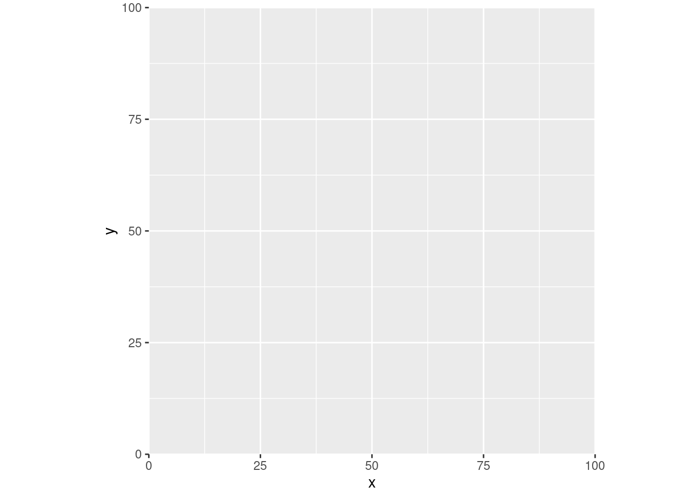
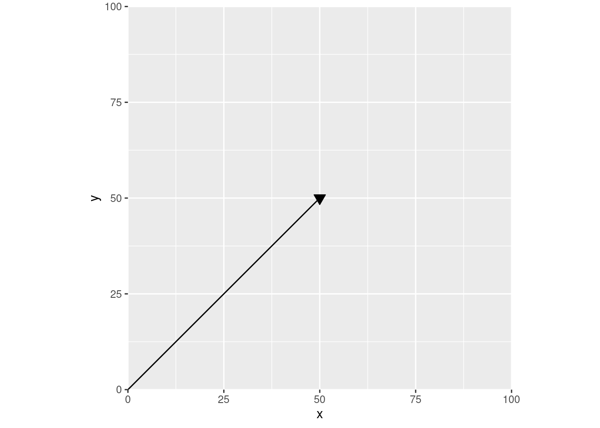
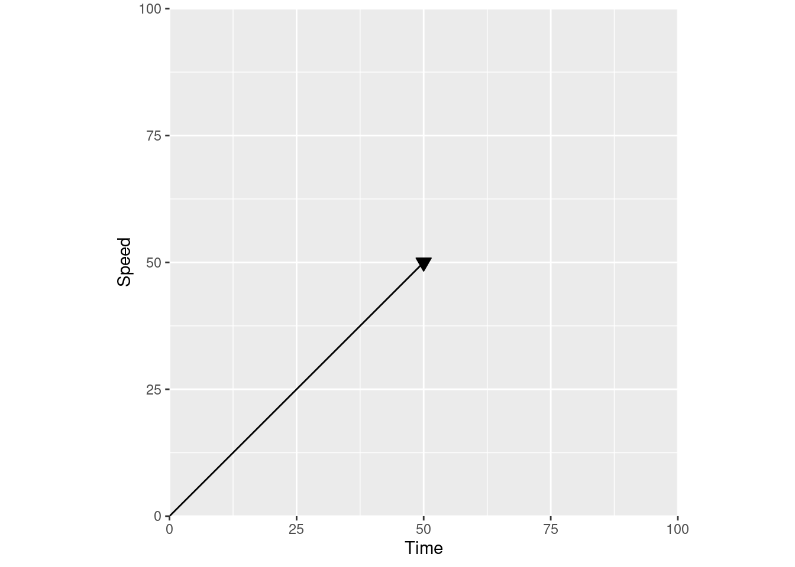
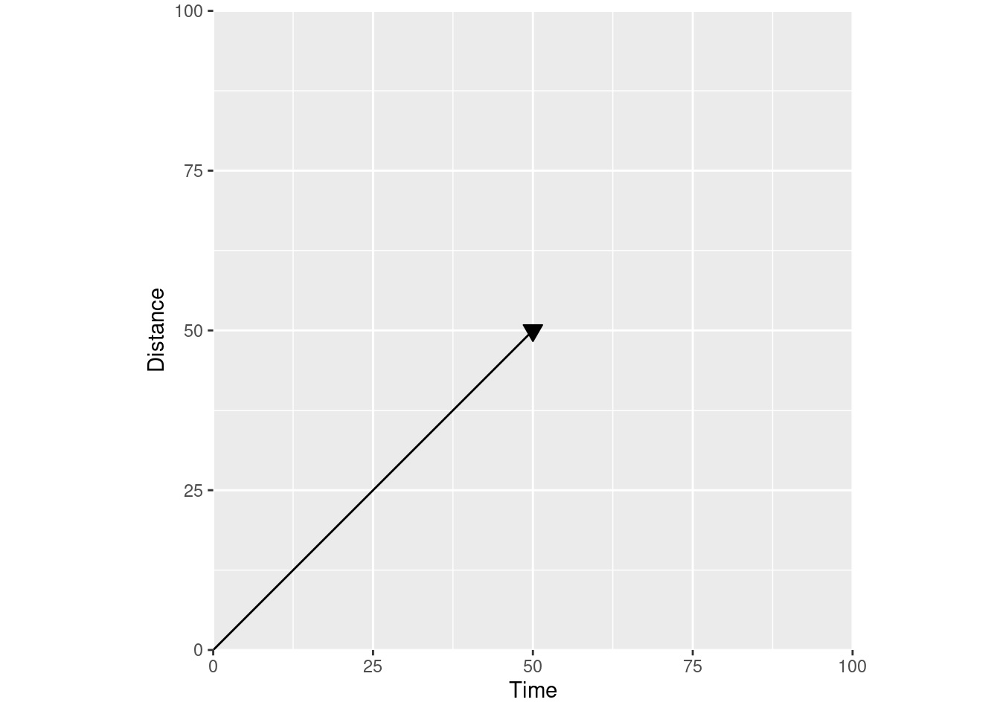
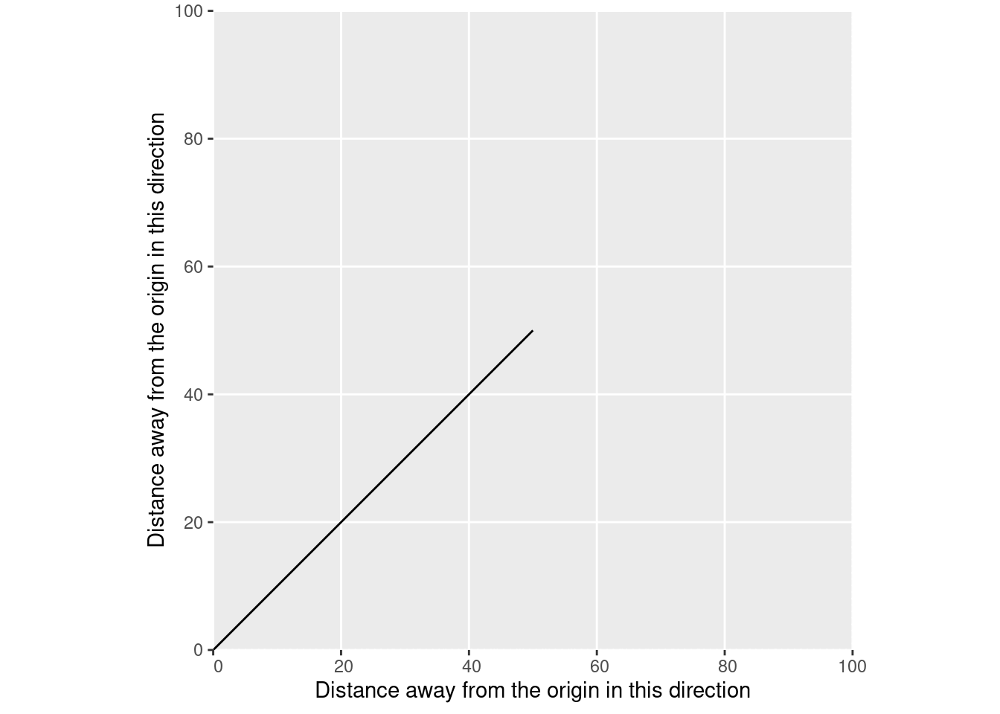
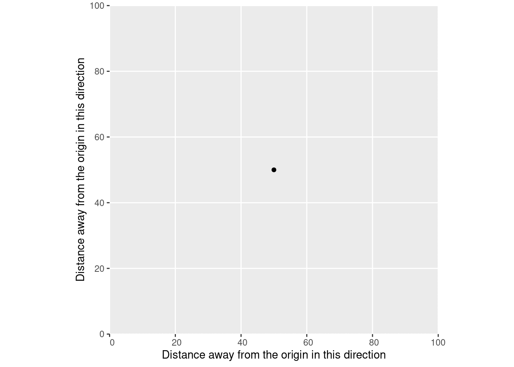
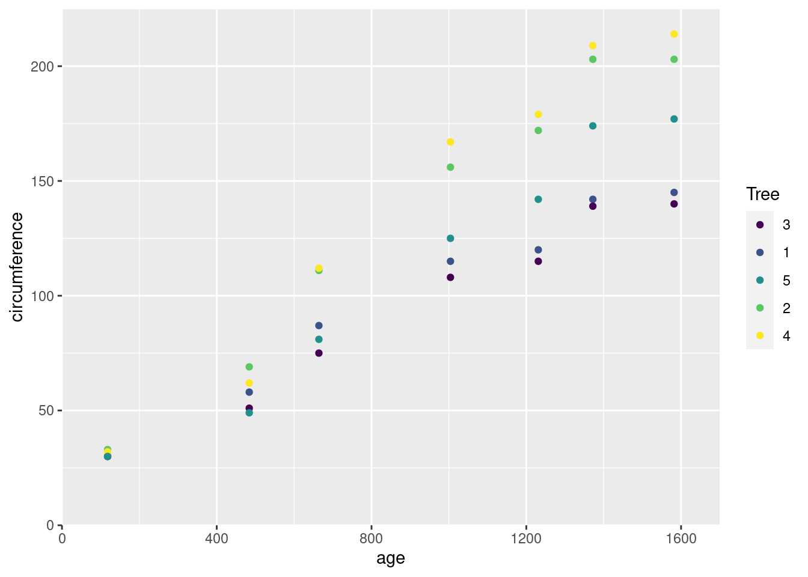

c(1, 2)[1] 1 2In linguistics, there’s this concept called “semantic overload” that refers to when a word has more than one distinct meaning, and the appropriate meaning needs to be inferred from context. The classic example is when someone says they’re “running to the store”: we can guess from context that the speaker isn’t going for a jog, but we’re forced to guess.
Software engineering loves semantic overload. An “agile team” might be a vague way to say that you’re very responsive, or it might mean you work in tightly-defined two week sprints. A “transaction” might be a customer ordering from a website, or a database writing a new row. When you’re developing software that’s tackling new types of problems, there’s often not existing language that describes exactly what your tool is trying to do, and so instead programmers use existing terms and rely upon metaphors and analogies to adapt them for a new purpose. But because the meaning of these terms changes depending on the context they’re used in, this overload can be a real barrier to learning for new users who don’t yet have the context to understand the overloaded term. For example, I’ve worked with a number of new programmers who were afraid of opening “Issues” on GitHub projects, because in other contexts announcing an issue you have with someone’s work is an aggressive action.1 Lacking the shared context makes it hard to decode what these terms mean.
And so, the term “vector”. For a bit of context, my undergraduate degree was in ecology – forest ecosystem science specifically, a specialization chosen in order to not need to take courses in Calculus 2 or Organic Chemistry. Which meant that, coming out of my degree, I had one course in physics, a handful in GIS and spatial data, and none in computer science. So when I learned that the base unit of R data, the result of running code like:
c(1, 2)[1] 1 2Was called a “vector”, I was frustrated. At this point, I had been told that:
In physics, a “vector” was any line with a magnitude (“length”) and a direction.
In GIS, a “vector” was pretty much any type of data; points, lines, polygons, whatever.2
In R and apparently computer science, a “vector” was quite literally any data whatsoever.
This felt to me like another case of pointless complexity, of the word “vector” being overloaded beyond the point of usefulness – and I didn’t feel like the word “vector” was particularly useful in the first place.
It turns out, though, that I was just missing the context that linked these three meanings together. I wouldn’t get that context until I was in grad school, procrastinating by watching 3Blue1Brown’s excellent videos on the fundamentals of linear algebra. I’m not nearly qualified to teach anything about linear algebra, and I don’t have the space nor the inclination to try to do so here – but I’m going to try and share the thing that gave me an “aha!” moment. To do that, I need to start off by getting really abstract.
First off, let’s say we’ve got some 2-dimensional plane, that looks like this:
library(ggplot2)
df <- data.frame(x = runif(100) * 100, y = runif(100) * 100)
ggplot(df, aes(x, y)) +
scale_x_continuous(expand = c(0, 0), limits = c(0, 100)) +
scale_y_continuous(expand = c(0, 0), limits = c(0, 100)) +
coord_fixed()
We’ve got our X axis and our Y axis here, and both meet at the origin – the place where the X coordinate is 0, and the Y coordinate is 0. We’d say that the coordinates at that point are (0, 0).
Now let’s go back to our physics definition of a vector – any line with a known length and direction. We could draw one of those in this coordinate plane – say our line is a bit longer than 70 “units”, going from (0, 0) all the way to (50, 50):
ggplot(df, aes(x, y)) +
scale_x_continuous(expand = c(0, 0), limits = c(0, 100)) +
scale_y_continuous(expand = c(0, 0), limits = c(0, 100)) +
annotate("segment", 0, 0, xend = 50, yend = 50) +
annotate("point", 50, 50, shape = 25, size = 3, fill = "black") +
coord_fixed()
This is how I was taught to think about vectors in those physics classes – arrows on some abstract plane. For instance, we could turn this into an acceleration vector by labeling these axes, so that our line is now charting speed over time:
ggplot(df, aes(x, y)) +
scale_x_continuous("Time", expand = c(0, 0), limits = c(0, 100)) +
scale_y_continuous("Speed", expand = c(0, 0), limits = c(0, 100)) +
annotate("segment", 0, 0, xend = 50, yend = 50) +
annotate("point", 50, 50, shape = 25, size = 3, fill = "black") +
coord_fixed()
If you change the axis labels to distance over time, you have a velocity vector instead:
ggplot(df, aes(x, y)) +
scale_x_continuous("Time", expand = c(0, 0), limits = c(0, 100)) +
scale_y_continuous("Distance", expand = c(0, 0), limits = c(0, 100)) +
annotate("segment", 0, 0, xend = 50, yend = 50) +
annotate("point", 50, 50, shape = 25, size = 3, fill = "black") +
coord_fixed()
The meaning of the line is defined by the axis labels – by the actual coordinate plane your vector is in. Looking at our velocity vector, we can tell how far we’ve gone (position on the Y axis) for any given time (position on the X axis).
So if we use a different coordinate plane and relabel our axes to show “distance away from the origin”:
ggplot(df, aes(x, y)) +
scale_x_continuous("Distance away from the origin in this direction", expand = c(0, 0), limits = c(0, 100)) +
scale_y_continuous("Distance away from the origin in this direction", expand = c(0, 0), limits = c(0, 100)) +
annotate("segment", 0, 0, xend = 50, yend = 50) +
coord_fixed()
We get vectors in a spatial sense. Rather than showing distance at a given time, we’re now showing the position of our data – in this case, a linestring – in one direction when it’s at a given position in the other direction. Just like in physics, the actual meaning of this line depends on the coordinate plane – on the coordinate reference system of the data. The CRS of your data is a standardized way to define where your origin is, what units your distances are measured in, and which direction away from the origin you’re going.
And we can use spatial vector data to replace our physics vector. We just need to define a matrix containing the beginning and end coordinates of our line:
our_matrix <- matrix(c(0, 0, 50, 50), nrow = 2, byrow = TRUE)
our_matrix [,1] [,2]
[1,] 0 0
[2,] 50 50And then we can tell sf that it should understand that matrix as being a line:
our_line <- sf::st_linestring(our_matrix)
our_lineLINESTRING (0 0, 50 50)And voila, we have a spatial vector:
ggplot() +
scale_x_continuous("Distance away from the origin in this direction", expand = c(0, 0), limits = c(0, 100)) +
scale_y_continuous("Distance away from the origin in this direction", expand = c(0, 0), limits = c(0, 100)) +
geom_sf(
data = our_line
)
At each point along this line on our X axis, our line is a single, known position on the Y axis. If we only have one measurement of XY position – say, a single GPS measurement – then our line would be of length 0. We’d have a point instead:
ggplot() +
scale_x_continuous("Distance away from the origin in this direction", expand = c(0, 0), limits = c(0, 100)) +
scale_y_continuous("Distance away from the origin in this direction", expand = c(0, 0), limits = c(0, 100)) +
geom_sf(
data = sf::st_point(c(50, 50))
)
That point represents a single position, which we’d understand through our coordinate reference system as being a certain distance away from a reference point.
Similarly, this is what vectors in R are abstracting. Imagine that, instead of using sf to make this a spatial vector, we turned our matrix into a data frame and used that with ggplot2 instead:
our_matrix |>
as.data.frame() |>
setNames(c("x", "y")) |>
ggplot(aes(x, y)) +
geom_line() +
scale_x_continuous("Distance away from the origin in this direction", expand = c(0, 0), limits = c(0, 100)) +
scale_y_continuous("Distance away from the origin in this direction", expand = c(0, 0), limits = c(0, 100)) +
coord_fixed()Just like with sf, we’re representing vectors by the places they start and end. And because we’ve plotted this as a line, we’re able to tell the position of our data at each distance along either the X or Y axis, within this coordinate reference system.
Or take for instance the age vector inside the Orange data frame:
Orange$age |> head()[1] 118 484 664 1004 1231 1372According to ?Orange, this vector represents the age of the tree, in units of days since 1968-12-31. Similarly, the circumference vector is the circumference of each tree in millimeters. We can plot those vectors just as easily as our physics and our spatial vectors:
ggplot(Orange, aes(age, circumference, color = Tree)) +
scale_x_continuous(limits = c(0, 1700), expand = c(0, 0)) +
scale_y_continuous(limits = c(0, 225), expand = c(0, 0)) +
geom_point()
This graph is using an abstract coordinate system – instead of “meters away from the origin”, one axis is “distance in time from a reference date”, and the other is “distance in length from not existing at all”. But just like our physics vectors, each of these points represents a magnitude in some direction. Our age vector is a set of magnitudes along a time axis; our circumference vector a set of magnitudes along a length axis.
Because I didn’t have a ton of formal math education, I never made the connection across these three types of vectors, and never entirely understood that they were all different ways of understanding and representing position along a coordinate plane, under some coordinate reference system. Recognizing that these different versions of “vectors” are all sharing an underlying meaning made it a lot easier for me to understand what “vector data” actually meant, and to understand the semantic difference between vector and raster representations of the same data. Hopefully this digression makes things a bit clearer for someone else, as well.